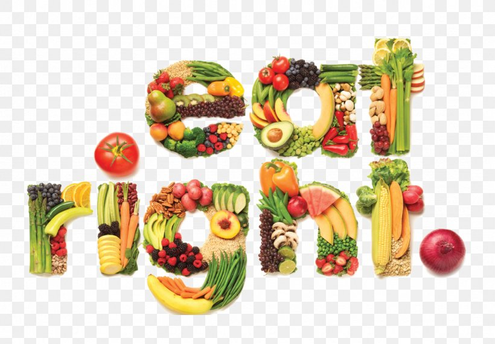
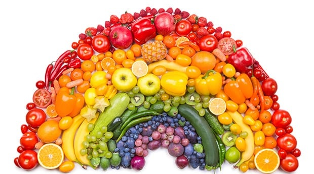

Step up your diet!
Do you want to be in a happy mood, do better at school, have more enthusiasm for enjoyable activities and make friends in music and sports that share mutual interests?
Our daily diet plays an important role in our daily lives , it is the main energy source to our body, if we dont get enough nutrients during the day then you will have hard times concentrating in school.
4 ways Size matters! (for your food)
1.Eating massive amounts of trail mix with abandon
There’s a reason why it’s called trail mix: it was intended as a portable food for people to eat while hiking—that is, people burning hundreds of extra calories per day. Most mixes have about 150 calories per ounce. It’s small, isn’t it? It probably won’t satisfy your hunger.
Hungry?Have a 300-450 calorie meal, and mix it with some fruits !
2.Thinking popcorn is free
Popcorn is a whole grain and, with moderation, it's nice for you. 240 calories is a bag of 94 percent fat-free Pop Secret. But if you want to dive in, go ahead, but also count the calories you top it with and any extras.
Hungry?Popcorn isn't going to fill you up. After a decent meal, eat half the bag as a snack a few hours later.
3.Eating too much fruit
Yes, fruit, especially in the form of yogurt smoothies, bananas and peanut butter. These are all healthy things, for sure, but they add up as well. Depending on what you put in, a smoothie will set you back 300-plus calories, which is perfect for breakfast on the run, but not for a snack. For starters, you probably want to avoid Jamba Juice's Peanut Butter Moo'd, which is a whopping 770 calories.
Hungry?Get a real meal once again if you're hungry. Not all the filling is liquid foods. Get a tiny smoothie for a snack: 1 banana (100 calories) combined with some skim milk (80 calories) is nutritious and enjoyable to drink.
4.Eating vegetable chips without weighing them
The Terra chips website proclaims, "A full portion of vegetables in every ounce." An ounce, however, has 140 calories and 8 grams of fat as well. There are 10 calories in an ounce of broccoli, 0 fat, and 1 gram of fiber. Veggie chips, although not by a lot, are more nutritious than traditional potato chips. As a small snack, enjoy a very tiny snack in moderation.
Hungry?Have a turkey sandwich with some veggies on the side and 1 serving of chips for crunch.
Who said eating helthy is boring ?
meh.. Eating healthy is actually more fun than you think. Anyone who feels it's no fun to eat healthy does not really understand how to eat healthy. They should think that all the food they love and eat only vegetables and fish or grilled chicken must be left out. I think this is because so many people feel that hunger and starvation are the only way to consume nutritious food and lose weight. Fun fact : By eating healthy you will meet new people that have the same interests as you ! .You might be asking where is the fun in eating healthy food ?
- You will experience increased energy, leading to improved achievements.
- You will add quality of life to your years.
- You will improve your mood.
- You will enjoy better health, because your body will be nourished
- You will become more physically active
- You will no longer suffer with overstuffed feeling
Why food waste is bad?
Wasting food affects the atmosphere as well. Food waste generates around one-quarter of man-made greenhouse gas emissions, and if food waste were a country, it would be ranked third in terms of greenhouse gas output after the USA and China.
We also use a lot of water when producing food. In the world, agriculture accounts for 70 percent of the water used. We're wasting 50,000 liters of water used to make the meat if we throw away 1kg of beef. A link exists between food waste and deforestation, too.
How can we reduce food waste?
Here are a few simple but effective steps in reducing your food waste:
1. Plan ahead when shopping
In the kitchen, keep a notepad handy and write down any food that's running out. This would make it easier to rummage through your cupboard and fridge once a week to avoid random regular trips to the store.
2. Make food last longer
Freezers aren't just for peas and ice-cream. For later use, potatoes, fruit and milk may all be frozen. It's also a good place to store bread, which is a big cause of food waste. Every day, 24 million slices of bread in the UK are thrown away because they are not consumed in time. Note that you can freeze food near the date it is used, too.
3. Turn leftovers into exciting recipes
If you plan ahead but still find there’s surplus food to use, don’t worry – you can use them to cook a variety of meals..